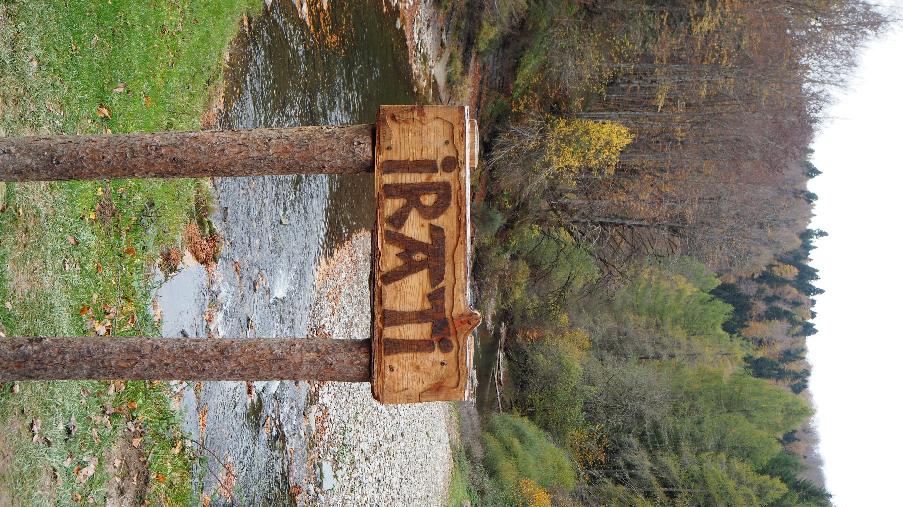
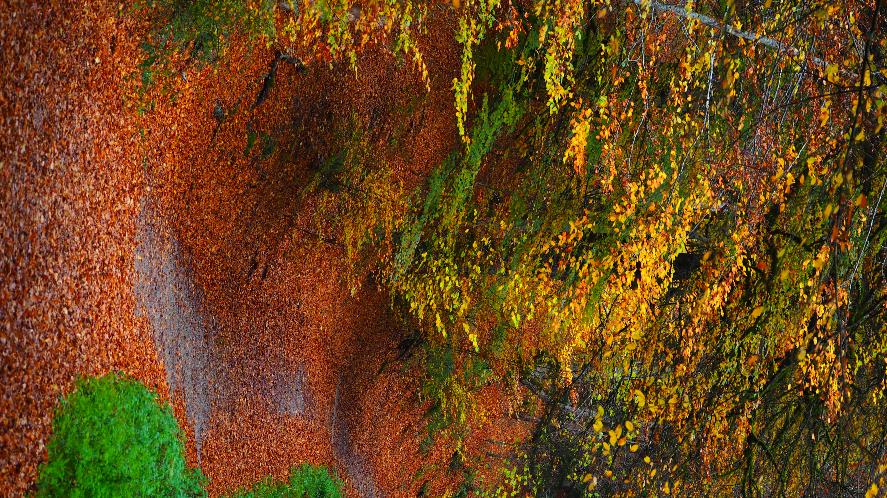
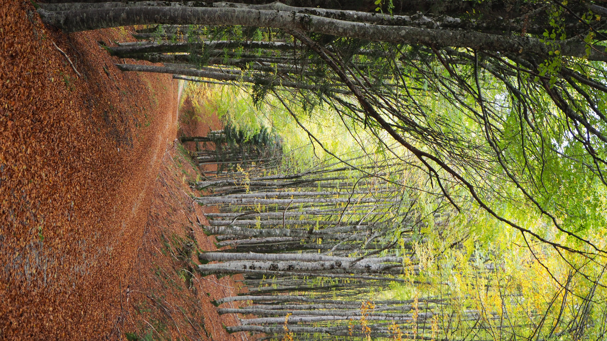
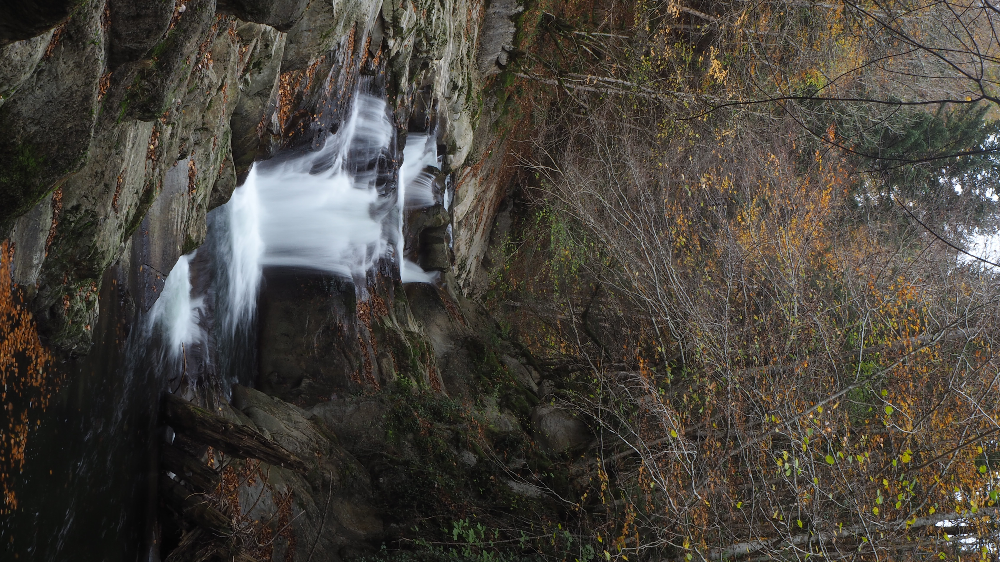
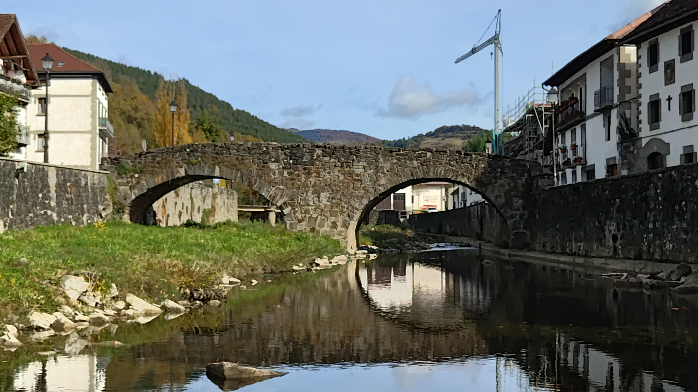
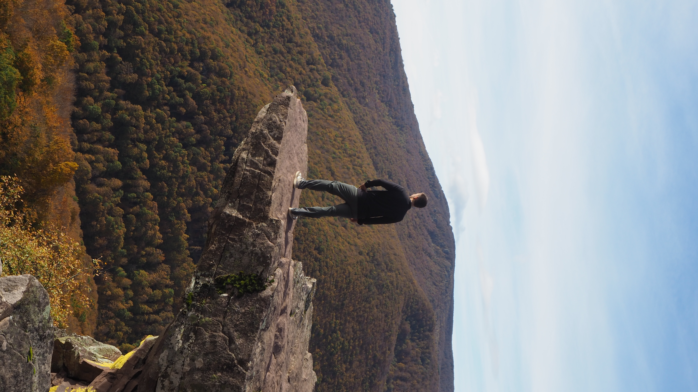

Si buscas una escapada de naturaleza, tranquilidad y paisajes espectaculares, pasar un fin de semana en Ochagavía y la Selva de Irati es una opción perfecta. Nosotros decidimos hacerlo en furgoneta durante otoño, y la experiencia no pudo ser mejor.
Llegamos el viernes por la tarde a Ochagavía y dormimos en el Camping Osate con la furgoneta. Era la última semana que el camping estaba abierto antes de cerrar por temporada, así que había muy poca gente. Prácticamente estaba vacío, lo que hacía que el ambiente fuera muy tranquilo y perfecto para descansar.
Por la noche fuimos a cenar al Asador Sidrería Kixkia, uno de los restaurantes más conocidos del pueblo. La verdad es que fue todo un acierto: la comida estaba espectacular y todo lo que pedimos estaba delicioso. Si visitas Ochagavía, es un sitio muy recomendable para cenar.

El sábado lo dedicamos a hacer una ruta por la Selva de Irati, uno de los hayedos-abetales mejor conservados de Europa.

Para acceder hay que pagar una pequeña entrada, aunque al estar alojados en el camping teníamos descuento. Aun así, merece totalmente la pena.
La ruta que hicimos era muy bonita, pero además tuvimos la suerte de visitarla en otoño. Los árboles tenían unos colores impresionantes: amarillos, naranjas y rojos que hacían que el paisaje pareciera una postal.

Además, no tuvimos ningún problema para aparcar. Al ser temporada baja, todo estaba bastante tranquilo, algo que seguramente cambia bastante en los meses más turísticos.
Por la tarde aprovechamos para visitar el propio pueblo de Ochagavía.

Es un pueblo pequeño que se puede recorrer bastante rápido, pero tiene muchísimo encanto. Sus casas de piedra, los puentes sobre el río y el ambiente tranquilo lo convierten en un lugar perfecto para pasear sin prisa.
El domingo por la mañana salimos del camping y antes de volver hicimos una última parada en el Mirador de Zamariain.

Las vistas desde allí son increíbles. El mirador está situado sobre un acantilado y asomarse al borde da bastante respeto por el vacío que hay debajo, pero al mismo tiempo es un sitio impresionante.
Además, la pequeña ruta para llegar hasta el mirador es muy sencilla, apta para cualquier tipo de persona, por lo que es una visita muy recomendable si estás por la zona.
Este fin de semana en Ochagavía y la Selva de Irati fue una escapada perfecta: naturaleza, tranquilidad, buena comida y paisajes espectaculares, especialmente en otoño.
Un destino muy recomendable para una escapada corta, tanto en furgoneta como alojándote en el pueblo.